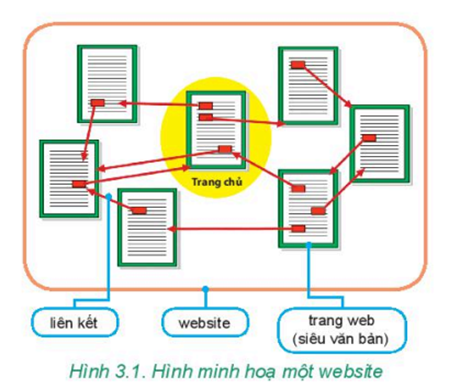

- Trang siêu văn bản là trang văn bản đặc biệt, tích hợp nhiều dạng dữ liệu khác nhau như văn bản, hình ảnh, âm thanh, video,... và các liên kết trỏ đến vị trí khác trong trang hay các trang web khác.
- Mỗi trang web là một trang siêu văn bản được gán cho một địa chỉ.
- Mỗi website là tập hợp các trang web liên quan và được truy cập thông qua một địa chỉ.
- Mỗi website do một người hoặc một tổ chức quản lí. Trang chủ (homepage) của website là trang được mở ra đầu tiên khi truy cập website đó. Địa chỉ của trang chủ chính là địa chỉ của website.
- Hệ thống các website trên Internet tạo thành Mạng thông tin toàn cầu (World Wide Web, viết tắt là WWW).
Ví dụ:
- http://thieunien.vn là địa chỉ của website báo Thiếu niên Tiền phong.
- https://vi.wikipedia.org là địa chỉ trang chủ của website Bách khoa toàn thư mở tiếng Việt.
- https://vi.wikipedia.org/wiki/Internet là địa chỉ của trang web về Internet trong website Bách khoa toàn thư mở tiếng Việt.
→ Thông tin trên Internet được tạo nên từ nhiều trang web kết nối với nhau bởi các liên kết. Mỗi trang web có địa chỉ truy cập riêng.
→ Website là một tập hợp các trang web liên quan được truy cập thông qua một địa chỉ. Địa chỉ của trang chủ là địa chỉ của website.
→ World Wide Web (W ) là mạng thông tin toàn cầu, liên kết các website trên Internet.
- Người sử dụng muốn truy cập các website thì cần phải sử dụng một phần mềm ứng dụng được gọi là trình duyệt (web browser).
- Một số trình duyệt được dùng phổ biến là Mozilla Firefox, Google Chrome, Safari, Cốc Cốc, Microsoft Edge,...
- Các trình duyệt có các chức năng chính và cách sử dụng tương tự nhau. Người sử dụng có thể cài đặt và sử dụng nhiều trình duyệt trên một máy tính.
- Để truy cập một trang web, ta có thể nhập địa chỉ của trang đó vào thanh địa chỉ của trình duyệt.
- Trang web có chứa các liên kết chỉ dẫn tới các trang web khác. Nháy chuột vào liên kết để chuyển tới trang web được xác định bởi liên kết đó. Hoạt động di chuyển theo các liên kết được gọi là duyệt web. Quá trình này cho phép người sử dụng xem các trang web để lấy thông tin.
→ Trình duyệt là phần mềm giúp người dùng truy cập các trang web trên Internet.
→ Người sử dụng có thể theo các liên kết để khai thác thông tin từ các trang web.